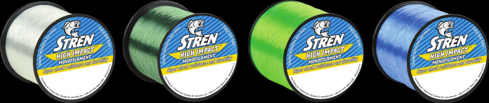

Stren High Impact Monofilament
Diameter chart, reel capacity & backing guide

High Impact is Stren's shock-resistance-focused mono family. This guide covers the 2016 US published Clear specifications and quarter-pound packages, not current stock. The package's weight is not its length: yardage changes with the selected strength.
- Construction
- Monofilament
- Listed strengths
- 10-30 lb
- Line type
- Monofilament main line
Plan for the diameter and the fishing load
High Impact was positioned for coastal and offshore mono main-line fishing. Choose a strength that suits the rod, drag and rig, then check the diameter against the reel's capacity. The larger packages can provide multiple fills; keep enough working line for the intended deployment and runs, and replace damaged sections after use.
How much High Impact will fit?
Calculated estimates, not measured fills. Stop at the reel manufacturer's fill level even if some line remains.
Stren High Impact diameter chart
2016 US High Impact Clear quarter-pound specifications only. No 17 lb row is supported by this table. Other colors, later editions and current stock are not inferred from these historical packages.
| Strength | Inches | mm | Spools (yd) |
|---|---|---|---|
| 0.012 | 0.3048 | 1275 | |
| 0.013 | 0.3302 | 1000 | |
| 0.016 | 0.4064 | 860 | |
| 0.018 | 0.4572 | 650 | |
| 0.020 | 0.508 | 490 | |
| 0.022 | 0.5588 | 400 |
Choosing your High Impact strength
The chart starts at 10 lb. The 10 and 12 lb entries may provide more working length on a given reel than the thicker choices, but the fishing load must still suit that strength.
The verified step after 15 lb is 20 lb. An unsupported legacy 17 lb record is excluded; no diameter is interpolated to fill the gap.
At 20-30 lb, check that the reel has enough usable length for your application after allowing for the thicker diameter. Do not judge a saltwater setup by package size alone.
Specification-based planning only. No independent shock, knot, abrasion or saltwater durability test was performed.
Want a guided recommendation?
Continue in the Setup WizardSame pound test, different diameters
At your selected strength
Loading diameter comparisons...
What changes with another line?
Nearby diameters in the line database
| Line | Strength | Inches | Difference |
|---|---|---|---|
| Loading line database... | |||
Backing, working line & leaders
Treat quarter-pound as package weight
The archived Clear package contains a different yardage at each strength. Use the row's length to budget fills; a quarter-pound label is neither a breaking strength nor a fixed number of yards.
Count complete fills conservatively
Compare the estimated full capacity with the package length and allow for knots, trimming and losses. A mathematical division of yards does not guarantee that every last partial fill is useful.
Use a continuous mono fill first
High Impact can occupy the full spool without a separate anti-slip backing layer. If retaining sound backing under a fresh section, keep the joining knot below the required working reserve.
Stop at the recommended clearance
Wind evenly and follow the reel maker's fill instructions. Recheck the line after contact with structure; the manufacturer's shock-resistance positioning is not immunity to damage.
How Much Fits on These Reels?
Estimated full-spool capacity for the High Impact strength selected above, with no backing. These are calculated examples, not physical tests or recommendations for every pairing.
Loading capacity estimates...
High Impact questions, answered
Does quarter-pound mean the same yardage at every strength?
No. It describes a weight package. The official chart provides strength-specific lengths, which must be used to plan the number of reel fills.
Why is there no 17 lb High Impact row?
That strength was not present in the inspected 2016 official table. The existing unverified record is excluded rather than populated by interpolation.
Does the image's color range expand the chart?
No. The original manufacturer image shows multiple colors, but the reviewed numeric and package scope here is the Clear column only.
Are these today's High Impact packages?
They are the manufacturer's 2016 US specifications. No current stock or unchanged formulation is asserted. Check the actual package before buying or spooling.
Specifications & sources
Checked September 13, 2026 against the official Stren 2016 catalog preserved by WesternBass. The Clear column, inch diameters and weight-package yardages were visually reviewed. Millimeters are explicit inch conversions. The image is original artwork from that same edition; no present-day package continuity or inventory claim is made.
Calculations use the catalog's listed inch diameters. Published inch and millimeter values may differ slightly because of rounding.
- Stren 2016 manufacturer High Impact chart Visually verified historical Clear quarter-pound lengths and inch diameters; not retailer-only data.
- Manufacturer High Impact artwork Unmodified image asset from the same catalog viewer.